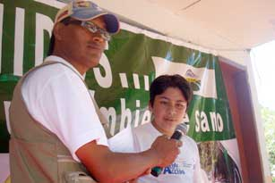

Literatura, producción y salud
Durante los nueve días, los estudiantes participaron en concursos, charlas, mingas y una marcha.
Para el concurso del cuento leído, escribieron obras sobre el medio ambiente. Un jurado calificador seleccionó las obras ganadoras y los autores las presentaron en el evento del 5 de junio. Marco Suárez, representante de Cuellaje, ganó el concurso zonal. En su mensaje al público, habló de la importancia de reciclar la basura, de no utilizar fungicidas que matan y dejan estéril la tierra, y que se deje de quemar puesto que esto es una importante fuente de contaminación en la zona. “Todo depende de nosotros”, dijo, y “no queremos que Intag se vuelva un desierto”.
En el mismo escenario, Edmundo Varela, presidente de la Asociación de Caficultores Río Íntag (AACRI) habló del café como una alternativa a la minería. Con la siembra de café bajo sombra se mantiene el bosque nublado, uno de los ecosistemas más diversos y más amenazados en el mundo. Además, la finca en sí se convierte en un espacio de biodiversidad con hasta 60 productos diferentes.
Por su parte, el personal médico de los centros de salud colaboró con charlas sobre la clasificación de la basura y la esterilización de envases para re-usarlos.
En una charla en el Colegio Nacional Apuela, el técnico Ayala dijo: “Siembra un árbol. Mientras tu duermes, él crece”. Y preguntó: ¿Qué pasaría si Íntag se volviera un desierto? Y, ¿qué podemos hacer para que esto no pase? Habló del papel preponderante que han jugado las grandes empresas transnacionales y los países industrializados en el cambio climático que se siente en todos los rincones del mundo. Pero hay otros sectores que también llevan a cabo acciones dañinas. Les recordó a los estudiantes y docentes que el verano viene y pidió que no se queme sin necesidad para que se conserve la casa grande que es la naturaleza. Sugirió que uno de los pasos más importantes que se está tomando consiste en los programas de reforestación. Urgió al público a ser parte del cambio, amigos de la naturaleza, y enfatizó que “los mejores amigos tenemos que ser los seres humanos”.
Reinas y discursos
Para la elección de la Señorita Ambiente, las candidatas se presentaron con trajes elaborados por ellas mismo con materiales de la zona. También ofrecieron mensajes. La señorita Doris Álvarez, en representación del colegio José Peralta, de Peñaherrera, dijo que se debe buscar alternativas sanas y menos destructivas para el bienestar de las familias. Esto permitirá mantener el corazón verde de la zona, aseguró. Por su parte, la señorita Rubí Cabezas, del colegio de Cuellaje, afirmó que todos tenemos derecho a ser felices y, sobre todo, sanos. Para esto debemos cuidar nuestro hogar que es la madre naturaleza. Finalmente, la representante del Colegio Nacional Apuela, la señorita Jéssica Anangonó, habló de las futuras generaciones y de la importancia de reforestar para que las personas que nos siguen tengan un mundo verde.
En una entrevista con el Periódico INTAG, la flamante Señorita Ambiental, Doris Álvarez, dijo que estamos a tiempo para que las futuras generaciones no sufran las consecuencias de un medio ambiente degradado. Añadió que, con la ayuda de personas con experiencia, se siente capaz de hacer muchas cosas y reconoció la gran responsabilidad que enfrenta.
El jurado calificador estuvo conformado por Freddy Villalva, en representación de la Junta Parroquial de Peñaherrera, Javier Ayala, presidente de la Junta de Cuellaje, y Amparo Vinuesa, responsable del servicio de Internet en el Complejo Turístico Nangulví.
En las intervenciones por líderes y autoridades, Javier Ayala, presidente de la parroquia de Cuellaje, felicitó a los técnicos Hugo Robalino y Ramiro Ayala por hacer un trabajo arduo en las parroquias, escuelas y colegios en favor de la naturaleza de la zona.
Por su parte, Silvia Quilumbango, presidenta de la DECOIN, enfatizó la importancia de la juventud para crear un ambiente sano. A la señorita Medio Ambiente le recordó el gran compromiso que tiene. Anunció que el equipo de la DECOIN quiere formar un comité ambiental integrado por la organización ambientalista, el Ministerio del Ambiente y, en representación de los jóvenes, la señorita Ambiente y su corte de honor.
Finalmente, Hugo Robalino, encargado del Programa de Educación Ambiental para el Consorcio Toisán, agradeció al señor Ayala por su apoyo y a las autoridades parroquiales,los licenciados y los estudiantes por participar en un programa sencillo pero muy significativo a favor del ambiente.